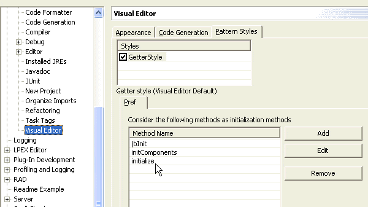

The Visual Editor uses code rules for parsing Java code for display on the canvas and for generating Java code.
The source code style currently used by the Visual Editor for Java is based upon the style generated by VisualAge for Java. When the .java file is opened, a model of the Java beans, their initial property values, and any relationships between them are created.
To determine the Java beans that appear on the canvas and Java Beans viewer, the Visual Editor analyzes each field to determine whether or not it should be included. To be recognized as a Java bean, the following rules must be satisfied:
- The field name must either start with the letters ivj or
be a visual Java bean whose type is a subclass of java.awt.Component.Note: Fields that start with ivjConn are not treated as Java beans.
- The field must be instantiated within a get method, or
the bean must be initialized in a method that is specified on the Pattern
Styles tab of the in the Visual Editor Preferences page. Notice in the following
image that the jbInit, initComponents, and initialize methods
are specified as initialization methods:

For example, the following fields are recognized as candidate Java beans:
private javax.swing.JPanel ivjJPanel; private javax.swing.JButton anOKButton; private javax.swing.table.TableModel ivjTableModel;
If ivjTableModel were simply named TableModel, it would not be included in the list of Visual Editor Java beans. However, anOKButton is included because the class javax.swing.JButton is a descendent of java.awt.Component, making it a visual Java bean.
In addition to having the correct field name, each field must be instantiated within a get method. The getPanel() method sets the field ivjJPanel to be an instance of javax.swing.JPanel, so ivjJPanel satisfies the rules to be recognized as Java bean by the Visual Editor.
private javax.swing.JPanel getJPanel() {
if ( ivjJPanel == null ) {
ivjJPanel = new javax.swing.JPanel();
ivjJPanel.setBackground(java.awt.Color.cyan);
}
}
Although the Visual Editor generates methods such as getPanel() that instantiate and return a single Java bean, this is not a requirement. A method can instantiate more than one Java bean, and the return value of the method is not important for recognizing whether the field is a Java bean. For the fields anOKButton and ivjTableModel to be included as Java beans, they will need to be instantiated within a get method in the class.
After a method is found for the Java bean that instantiates it, it is further analyzed for design time property settings. In getJPanel(), the method ivjJPanel.setBackground(java.awt.Color.cyan) is used to determine the initial value of the background property for the Java bean shown in the canvas and the Properties view.
If the edited class extends a Java bean, the instance being edited is represented with a special Java bean called a 'this' part. The 'this' part cannot be deleted from the Design view or Java Beans view, and the initialization method for its properties are done in the initialize() method. A 'this' part is only shown in the Design view and Java Beans view if there are any properties that would be available to set on the Properties view. The set methods for the properties are generated in the initialize() method, or if the class extends java.awt.Applet the init() method is used.
When the arguments to a property's set method are parsed, such as the "Hello_World_1"
String argument to the setTitle method, the Visual Editor attempts to construct
a Java bean for the property value. Most expressions are successfully parsed,
but not all expressions can be correctly evaluated. In this case a warning
sign will be shown against the Java bean in the views, and the reason for
the failure will be shown in the status line Notice the orientation warning
in the status line in the following screen image:
The following set of rules must be met for an expression to be successfully parsed by the Visual Editor:
- There must not be a compilation error on the line
- A class must be valid to load and instantiate
- Most array initialization expressions cannot be evaluated
- Expressions that involve arithmetic or string concatenation using the + operand will be not be evaluated
When a set method is parsed, it is only applied to the Java bean if it is a set method that is associated with a java.beans.PropertyDescriptor.